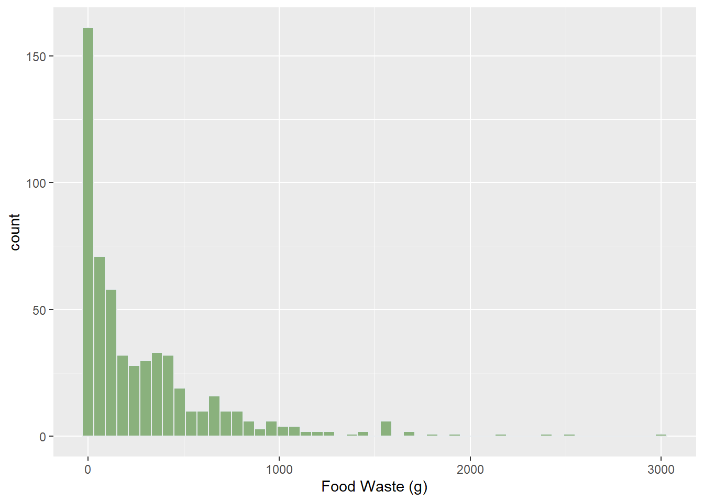
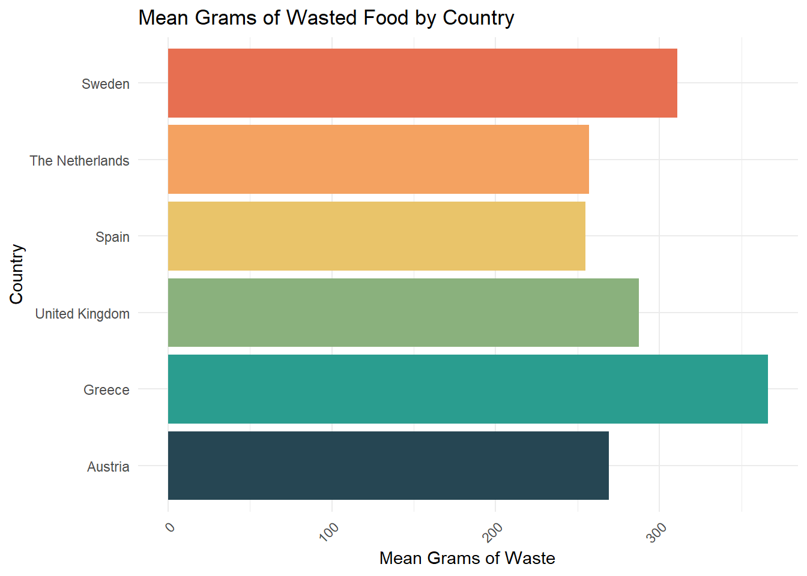
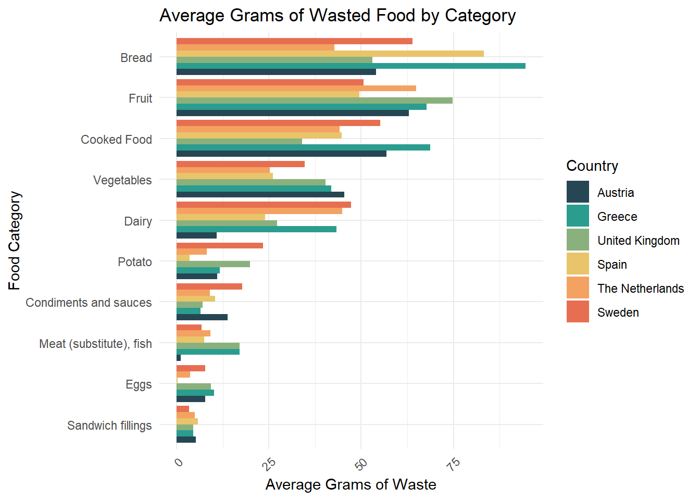
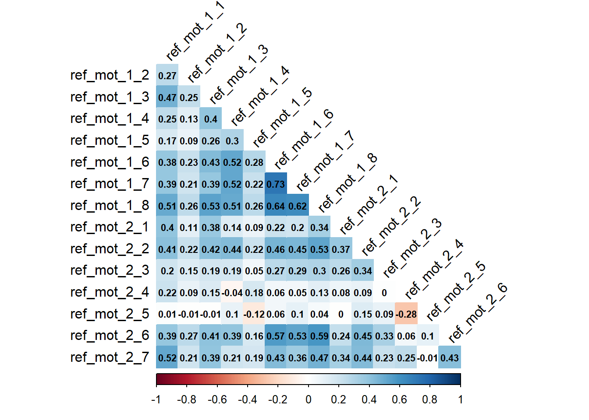

| Total (N=566) |
DE (N=66) |
EL (N=92) |
EN-GB (N=158) |
ES-ES (N=91) |
NL (N=82) |
SV (N=77) |
|
|---|---|---|---|---|---|---|---|
| Gender | |||||||
| Male | 284 (50.2%) | 32 (48.5%) | 55 (59.8%) | 56 (35.4%) | 51 (56.0%) | 46 (56.1%) | 44 (57.1%) |
| Female | 268 (47.3%) | 33 (50.0%) | 33 (35.9%) | 101 (63.9%) | 37 (40.7%) | 33 (40.2%) | 31 (40.3%) |
| Non-binary/third-gender | 10 (1.8%) | 1 (1.5%) | 2 (2.2%) | 0 (0%) | 3 (3.3%) | 3 (3.7%) | 1 (1.3%) |
| Prefer not to say | 4 (0.7%) | 0 (0%) | 2 (2.2%) | 1 (0.6%) | 0 (0%) | 0 (0%) | 1 (1.3%) |
| Age | |||||||
| Mean (SD) | 35.6 (11.8) | 30.7 (10.0) | 34.7 (11.0) | 38.9 (13.6) | 38.0 (11.0) | 32.1 (8.85) | 35.3 (11.2) |
| Median [Min, Max] | 33.0 [18.0, 78.0] | 28.5 [18.0, 69.0] | 33.5 [20.0, 67.0] | 36.0 [19.0, 78.0] | 35.0 [21.0, 74.0] | 29.0 [19.0, 67.0] | 32.0 [19.0, 67.0] |
| How many adults are part of your household? (aged 18 and older) | |||||||
| Mean (SD) | 2.13 (1.07) | 1.98 (0.969) | 2.32 (1.07) | 2.13 (1.31) | 2.26 (0.929) | 1.98 (0.860) | 2.00 (0.918) |
| Median [Min, Max] | 2.00 [0, 13.0] | 2.00 [0, 5.00] | 2.00 [0, 6.00] | 2.00 [0, 13.0] | 2.00 [1.00, 5.00] | 2.00 [1.00, 4.00] | 2.00 [0, 4.00] |
| How many children are part of your household? (aged under 18) | |||||||
| Mean (SD) | 0.385 (0.751) | 0.258 (0.640) | 0.374 (0.770) | 0.459 (0.836) | 0.495 (0.808) | 0.280 (0.614) | 0.338 (0.681) |
| Median [Min, Max] | 0 [0, 4.00] | 0 [0, 2.00] | 0 [0, 3.00] | 0 [0, 4.00] | 0 [0, 3.00] | 0 [0, 3.00] | 0 [0, 3.00] |
| Missing | 2 (0.4%) | 0 (0%) | 1 (1.1%) | 1 (0.6%) | 0 (0%) | 0 (0%) | 0 (0%) |
| Highest education level | |||||||
| No formal education | 0 (0%) | 0 (0%) | 0 (0%) | 0 (0%) | 0 (0%) | 0 (0%) | 0 (0%) |
| Primary education | 8 (1.4%) | 2 (3.0%) | 0 (0%) | 2 (1.3%) | 0 (0%) | 0 (0%) | 4 (5.2%) |
| Secondary education (GCSE) | 64 (11.3%) | 3 (4.5%) | 11 (12.0%) | 18 (11.4%) | 10 (11.0%) | 5 (6.1%) | 17 (22.1%) |
| College or vocational qualifications (e.g. BTEC, NVQ) | 89 (15.7%) | 28 (42.4%) | 12 (13.0%) | 11 (7.0%) | 10 (11.0%) | 13 (15.9%) | 15 (19.5%) |
| A-levels or equivalent | 55 (9.7%) | 2 (3.0%) | 8 (8.7%) | 11 (7.0%) | 2 (2.2%) | 27 (32.9%) | 5 (6.5%) |
| Bachelor's degree or equivalent | 206 (36.4%) | 18 (27.3%) | 40 (43.5%) | 72 (45.6%) | 39 (42.9%) | 18 (22.0%) | 19 (24.7%) |
| Master's degree or equivalent | 127 (22.4%) | 10 (15.2%) | 19 (20.7%) | 37 (23.4%) | 28 (30.8%) | 18 (22.0%) | 15 (19.5%) |
| Doctorate or equivalent | 17 (3.0%) | 3 (4.5%) | 2 (2.2%) | 7 (4.4%) | 2 (2.2%) | 1 (1.2%) | 2 (2.6%) |
| Employment status | |||||||
| Employed full-time | 262 (46.3%) | 28 (42.4%) | 53 (57.6%) | 64 (40.5%) | 50 (54.9%) | 31 (37.8%) | 36 (46.8%) |
| Employed part-time | 89 (15.7%) | 10 (15.2%) | 8 (8.7%) | 33 (20.9%) | 11 (12.1%) | 18 (22.0%) | 9 (11.7%) |
| Self employed | 47 (8.3%) | 5 (7.6%) | 5 (5.4%) | 12 (7.6%) | 10 (11.0%) | 9 (11.0%) | 6 (7.8%) |
| Unemployed looking for work | 39 (6.9%) | 2 (3.0%) | 4 (4.3%) | 12 (7.6%) | 8 (8.8%) | 6 (7.3%) | 7 (9.1%) |
| Unemployed not looking for work | 16 (2.8%) | 2 (3.0%) | 4 (4.3%) | 6 (3.8%) | 2 (2.2%) | 1 (1.2%) | 1 (1.3%) |
| Retired | 20 (3.5%) | 1 (1.5%) | 2 (2.2%) | 12 (7.6%) | 1 (1.1%) | 1 (1.2%) | 3 (3.9%) |
| Student | 76 (13.4%) | 18 (27.3%) | 13 (14.1%) | 11 (7.0%) | 8 (8.8%) | 14 (17.1%) | 12 (15.6%) |
| Inability to work | 11 (1.9%) | 0 (0%) | 2 (2.2%) | 6 (3.8%) | 0 (0%) | 1 (1.2%) | 2 (2.6%) |
| Other | 4 (0.7%) | 0 (0%) | 1 (1.1%) | 2 (1.3%) | 0 (0%) | 1 (1.2%) | 0 (0%) |
| Missing | 2 (0.4%) | 0 (0%) | 0 (0%) | 0 (0%) | 1 (1.1%) | 0 (0%) | 1 (1.3%) |
| Net monthly household income | |||||||
| Less than €1,000 | 67 (11.8%) | 6 (9.1%) | 19 (20.7%) | 15 (9.5%) | 11 (12.1%) | 12 (14.6%) | 4 (5.2%) |
| €1,000 - €1,999 | 130 (23.0%) | 10 (15.2%) | 40 (43.5%) | 28 (17.7%) | 23 (25.3%) | 15 (18.3%) | 14 (18.2%) |
| €2,000 - €2,999 | 125 (22.1%) | 12 (18.2%) | 15 (16.3%) | 40 (25.3%) | 25 (27.5%) | 21 (25.6%) | 12 (15.6%) |
| €3,000 - €3,999 | 98 (17.3%) | 18 (27.3%) | 7 (7.6%) | 30 (19.0%) | 18 (19.8%) | 10 (12.2%) | 15 (19.5%) |
| €4,000 - €4,999 | 45 (8.0%) | 8 (12.1%) | 1 (1.1%) | 11 (7.0%) | 3 (3.3%) | 14 (17.1%) | 8 (10.4%) |
| €5,000 - €5,999 | 31 (5.5%) | 2 (3.0%) | 1 (1.1%) | 8 (5.1%) | 4 (4.4%) | 5 (6.1%) | 11 (14.3%) |
| €6,000 - €6,999 | 20 (3.5%) | 4 (6.1%) | 1 (1.1%) | 5 (3.2%) | 3 (3.3%) | 2 (2.4%) | 5 (6.5%) |
| €7,000 - €7,999 | 9 (1.6%) | 0 (0%) | 0 (0%) | 4 (2.5%) | 0 (0%) | 0 (0%) | 5 (6.5%) |
| €8,000 - €8,999 | 6 (1.1%) | 1 (1.5%) | 1 (1.1%) | 0 (0%) | 2 (2.2%) | 0 (0%) | 2 (2.6%) |
| €9,000 - €9,999 | 5 (0.9%) | 1 (1.5%) | 1 (1.1%) | 2 (1.3%) | 1 (1.1%) | 0 (0%) | 0 (0%) |
| €10,000 - €14,999 | 10 (1.8%) | 3 (4.5%) | 3 (3.3%) | 2 (1.3%) | 0 (0%) | 2 (2.4%) | 0 (0%) |
| €15,000 or more | 18 (3.2%) | 1 (1.5%) | 3 (3.3%) | 12 (7.6%) | 1 (1.1%) | 1 (1.2%) | 0 (0%) |
| Missing | 2 (0.4%) | 0 (0%) | 0 (0%) | 1 (0.6%) | 0 (0%) | 0 (0%) | 1 (1.3%) |
| fw_total | |||||||
| Mean (SD) | 292 (393) | 269 (330) | 366 (444) | 287 (379) | 255 (395) | 257 (426) | 311 (363) |
| Median [Min, Max] | 150 [0, 3020] | 150 [0, 1710] | 230 [0, 2430] | 130 [0, 2170] | 150 [0, 2530] | 125 [0, 3020] | 185 [0, 1680] |
COM-B Food Waste Determinants
Below is some preliminary analysis of the data acquired from the questionnaire of COM-B determinants, habits and generated food waste.
Sample characteristics
Food waste descriptives



COM-B Descriptives
| M | SD | Median | n | Cronbach's Alpha | |
|---|---|---|---|---|---|
| Psychological Capability (5 items) | 5.27 | 0.92 | 5.40 | 564 | 0.72 |
| Physical Opportunity (2 items) | 5.71 | 0.97 | 6.00 | 566 | 0.63 |
| Social Opportunity (2 items) | 4.77 | 1.18 | 5.00 | 566 | 0.57 |
| Reflective Motivation (15 items) | 5.35 | 0.72 | 5.47 | 560 | 0.84 |
| Automatic Motivation (4 items) | 5.63 | 0.93 | 5.75 | 564 | 0.67 |

Scale reliability

| aut_mot_1_1 | aut_mot_1_2 | aut_mot_1_3 | aut_mot_1_4 | |
|---|---|---|---|---|
| aut_mot_1_1 | 1.00 | 0.43 | 0.17 | 0.44 |
| aut_mot_1_2 | 0.43 | 1.00 | 0.26 | 0.51 |
| aut_mot_1_3 | 0.17 | 0.26 | 1.00 | 0.39 |
| aut_mot_1_4 | 0.44 | 0.51 | 0.39 | 1.00 |
fit_lm <- lm(fw_total ~ psycap + socopp + phyopp + refmot + autmot, data=df)
fit_lm %>%
#fw_comb_tobit <- vglm(fw_total ~ psycap + socopp + phyopp + refmot + autmot, tobit(), data=df) %>%
tidy() %>%
kable(digits = 2, caption = "Linear model summary")| term | estimate | std.error | statistic | p.value |
|---|---|---|---|---|
| (Intercept) | 1378.74 | 124.59 | 11.07 | 0.00 |
| psycap | -71.69 | 21.94 | -3.27 | 0.00 |
| socopp | 28.01 | 14.42 | 1.94 | 0.05 |
| phyopp | -23.98 | 20.30 | -1.18 | 0.24 |
| refmot | -187.81 | 36.81 | -5.10 | 0.00 |
| autmot | 53.29 | 25.52 | 2.09 | 0.04 |
logLik(fit_lm)'log Lik.' -4065.981 (df=7)fit <- censReg(fw_total ~ psycap + socopp + phyopp + refmot + autmot, data=df)
kable(coef(summary(fit)), digits = 2, caption = "Tobit model summary")| Estimate | Std. error | t value | Pr(> t) | |
|---|---|---|---|---|
| (Intercept) | 1628.08 | 156.70 | 10.39 | 0.00 |
| psycap | -85.00 | 27.58 | -3.08 | 0.00 |
| socopp | 32.84 | 18.23 | 1.80 | 0.07 |
| phyopp | -32.83 | 25.24 | -1.30 | 0.19 |
| refmot | -245.51 | 46.19 | -5.31 | 0.00 |
| autmot | 67.47 | 32.07 | 2.10 | 0.04 |
| logSigma | 6.09 | 0.04 | 170.31 | 0.00 |
logLik(fit)'log Lik.' -3264.522 (df=7)teststat <- -2 * (logLik(fit)-logLik(fit_lm))
pchisq(teststat, df=1, lower.tail=FALSE)'log Lik.' 1 (df=7)